library(tidyverse)
library(tidymodels)
library(knitr)
library(janitor) # for contingency tables
library(ISLR2)
library(ggforce) # sina plots
tidymodels_prefer()
set.seed(427)MATH 427: ROC Curve and AUC
Computational Set-Up
Default Dataset
A simulated data set containing information on ten thousand customers. The aim here is to predict which customers will default on their credit card debt.
head(Default) |> kable() # print first six observations| default | student | balance | income |
|---|---|---|---|
| No | No | 729.5265 | 44361.625 |
| No | Yes | 817.1804 | 12106.135 |
| No | No | 1073.5492 | 31767.139 |
| No | No | 529.2506 | 35704.494 |
| No | No | 785.6559 | 38463.496 |
| No | Yes | 919.5885 | 7491.559 |
Response Variable: default
Default |>
tabyl(default) |> # class frequencies
kable() # Make it look nice| default | n | percent |
|---|---|---|
| No | 9667 | 0.9667 |
| Yes | 333 | 0.0333 |
Split the data
set.seed(427)
default_split <- initial_split(Default, prop = 0.6, strata = default)
default_split<Training/Testing/Total>
<6000/4000/10000>default_train <- training(default_split)
default_test <- testing(default_split)K-Nearest Neighbors Classifier: Build Model
- Response (\(Y\)):
default - Predictor (\(X\)):
balance
knnfit <- nearest_neighbor(neighbors = 10) |>
set_engine("kknn") |>
set_mode("classification") |>
fit(default ~ balance, data = default_train) # fit 10-nn modelK-Nearest Neighbors Classifier: Predictions
predict(knnfit, new_data = default_test, type = "class") |> head() |> kable() # obtain predictions as classes| .pred_class |
|---|
| No |
| No |
| No |
| No |
| No |
| No |
- Predicts class w/ maximum probability
predict(knnfit, new_data = default_test, type = "prob") |> head() |> kable() # obtain predictions as probabilities| .pred_No | .pred_Yes |
|---|---|
| 1 | 0 |
| 1 | 0 |
| 1 | 0 |
| 1 | 0 |
| 1 | 0 |
| 1 | 0 |
Fitting a logistic regression
Fitting a logistic regression model with default as the response and balance as the predictor:
logregfit <- logistic_reg() |>
set_engine("glm") |>
fit(default ~ balance, data = default_train) # fit logistic regression model
tidy(logregfit) |> kable() # obtain results| term | estimate | std.error | statistic | p.value |
|---|---|---|---|---|
| (Intercept) | -10.6926385 | 0.4659035 | -22.95033 | 0 |
| balance | 0.0055327 | 0.0002841 | 19.47329 | 0 |
Making predictions in R
predict(logregfit, new_data = tibble(balance = 700), type = "class") |> kable() # obtain class predictions| .pred_class |
|---|
| No |
predict(logregfit, new_data = tibble(balance = 700), type = "raw") |> kable() # obtain log-odds predictions| x |
|---|
| -6.819727 |
predict(logregfit, new_data = tibble(balance = 700), type = "prob") |> kable() # obtain probability predictions| .pred_No | .pred_Yes |
|---|---|
| 0.9989092 | 0.0010908 |
Binary Classifiers
- Start with binary classification scenarios
- With binary classification, designate one category as “Success/Positive” and the other as “Failure/Negative”
- If relevant to your problem: “Positive” should be the thing you’re trying to predict/care more about
- Note: “Positive” \(\neq\) “Good”
- For
default: “Yes” is Positive
- Some metrics weight “Positives” more and viceversa
Last Time
- Confusion Matrix
- Metrics based on confusion matrix
- Accuracy
- Recall/Sensitivity
- Precision/PPV
- Specificity
- NPV
- MCC
- F-Measure
- Today: ROC and AUC
Thresholding
Using a threshold
- Step 1: Predict probabilities for all observations
default_test_wprobs <- default_test |>
mutate(
knn_probs = predict(knnfit, new_data = default_test, type = "prob") |> pull(.pred_Yes),
logistic_probs = predict(logregfit, new_data = default_test, type = "prob") |> pull(.pred_Yes)
)
default_test_wprobs |> head() |> kable() # obtain probability predictions| default | student | balance | income | knn_probs | logistic_probs |
|---|---|---|---|---|---|
| No | No | 729.5265 | 44361.63 | 0 | 0.0012842 |
| No | Yes | 808.6675 | 17600.45 | 0 | 0.0019883 |
| No | Yes | 1220.5838 | 13268.56 | 0 | 0.0190870 |
| No | No | 237.0451 | 28251.70 | 0 | 0.0000843 |
| No | No | 606.7423 | 44994.56 | 0 | 0.0006514 |
| No | No | 286.2326 | 45042.41 | 0 | 0.0001107 |
Using a threshold
- Step 1: Predict probabilities for all observations
- Step 2: Set a threshold to obtain class labels (0.5 below)
threshold <- 0.5 # set threshold
default_test_wprobs <- default_test_wprobs |>
mutate(knn_preds = as_factor(if_else(knn_probs > threshold, "Yes", "No")),
logistic_preds = as_factor(if_else(logistic_probs > threshold, "Yes", "No"))
)
default_test_wprobs |> head() |> kable()| default | student | balance | income | knn_probs | logistic_probs | knn_preds | logistic_preds |
|---|---|---|---|---|---|---|---|
| No | No | 729.5265 | 44361.63 | 0 | 0.0012842 | No | No |
| No | Yes | 808.6675 | 17600.45 | 0 | 0.0019883 | No | No |
| No | Yes | 1220.5838 | 13268.56 | 0 | 0.0190870 | No | No |
| No | No | 237.0451 | 28251.70 | 0 | 0.0000843 | No | No |
| No | No | 606.7423 | 44994.56 | 0 | 0.0006514 | No | No |
| No | No | 286.2326 | 45042.41 | 0 | 0.0001107 | No | No |
Using a threshold
- Step 1: Predict probabilities for all observations
- Step 2: Set a threshold to obtain class labels (0.5 below)
threshold <- 0.5 # set threshold
default_test_wprobs <- default_test_wprobs |>
mutate(knn_preds = as_factor(if_else(knn_probs > threshold, "Yes", "No")),
logistic_preds = as_factor(if_else(logistic_probs > threshold, "Yes", "No")))
default_test_wprobs |> head() |> kable()| default | student | balance | income | knn_probs | logistic_probs | knn_preds | logistic_preds |
|---|---|---|---|---|---|---|---|
| No | No | 729.5265 | 44361.63 | 0 | 0.0012842 | No | No |
| No | Yes | 808.6675 | 17600.45 | 0 | 0.0019883 | No | No |
| No | Yes | 1220.5838 | 13268.56 | 0 | 0.0190870 | No | No |
| No | No | 237.0451 | 28251.70 | 0 | 0.0000843 | No | No |
| No | No | 606.7423 | 44994.56 | 0 | 0.0006514 | No | No |
| No | No | 286.2326 | 45042.41 | 0 | 0.0001107 | No | No |
Performance
roc_metrics <- metric_set(accuracy, sensitivity, specificity)
roc_metrics(default_test_wprobs, truth = default, estimate = knn_preds, event_level = "second") |> kable()| .metric | .estimator | .estimate |
|---|---|---|
| accuracy | binary | 0.9717500 |
| sensitivity | binary | 0.3565891 |
| specificity | binary | 0.9922501 |
Low Threshold
threshold <- 0.1 # set threshold
default_test_wprobs <- default_test_wprobs |>
mutate(knn_preds = as_factor(if_else(knn_probs > threshold, "Yes", "No")))
roc_metrics(default_test_wprobs, truth = default, estimate = knn_preds, event_level = "second") |> kable()| .metric | .estimator | .estimate |
|---|---|---|
| accuracy | binary | 0.9060000 |
| sensitivity | binary | 0.7364341 |
| specificity | binary | 0.9116507 |
High Threshold
threshold <- 0.9 # set threshold
default_test_wprobs <- default_test_wprobs |>
mutate(knn_preds = as_factor(if_else(knn_probs > threshold, "Yes", "No"))
)
roc_metrics(default_test_wprobs, truth = default, estimate = knn_preds, event_level = "second") |> kable()| .metric | .estimator | .estimate |
|---|---|---|
| accuracy | binary | 0.9685000 |
| sensitivity | binary | 0.0310078 |
| specificity | binary | 0.9997417 |
Question
- If I want to improve Recall/Sensitivity should I increase or decrease my threshold?
- If I want to improve my Precision/PPV should I increase or decrease my threshold?
ROC Curve
ROC Curve and AUC
- ROC (Receiver Operating Characteristics) curve: popular graphic for comparing different classifiers across all possible thresholds
- Plots the (1-Specificity) along the x-axis and the Sensitivity (true positive rate) along the y-axis
- AUC: area under the AUC curve
- Ideal ROC curve will hug the top left corner
- Idea: How well is my classifier separating positives from negatives
ROC Curve
roc_curve(default_test_wprobs, truth = default, knn_probs, event_level = "second") |>
head() |>
kable()| .threshold | specificity | sensitivity |
|---|---|---|
| -Inf | 0.0000000 | 1.0000000 |
| 0.0000 | 0.0000000 | 1.0000000 |
| 0.0145 | 0.8796177 | 0.8217054 |
| 0.0415 | 0.8858176 | 0.8139535 |
| 0.0560 | 0.8971842 | 0.7829457 |
| 0.0655 | 0.8979592 | 0.7751938 |
ROC Curve: Plot
roc_curve(default_test_wprobs, truth = default, knn_probs, event_level = "second") |>
autoplot()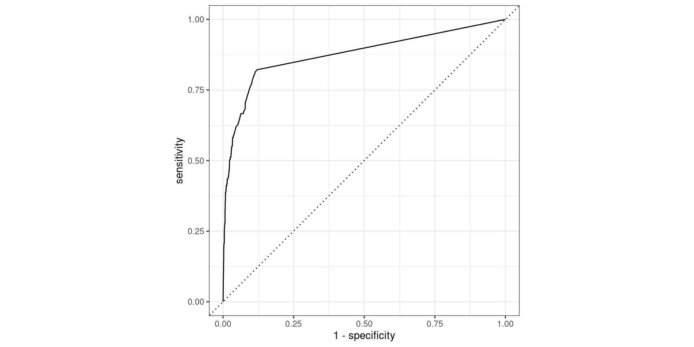
AUC
- AUC: Area under the curve (ROC Curve that is)
- Measures how good your model is at separating categories
- Only for binary classification
AUC in R
roc_auc(default_test_wprobs, truth = default, knn_probs, event_level = "second") |>
kable()| .metric | .estimator | .estimate |
|---|---|---|
| roc_auc | binary | 0.8757397 |
Pathological Example 1
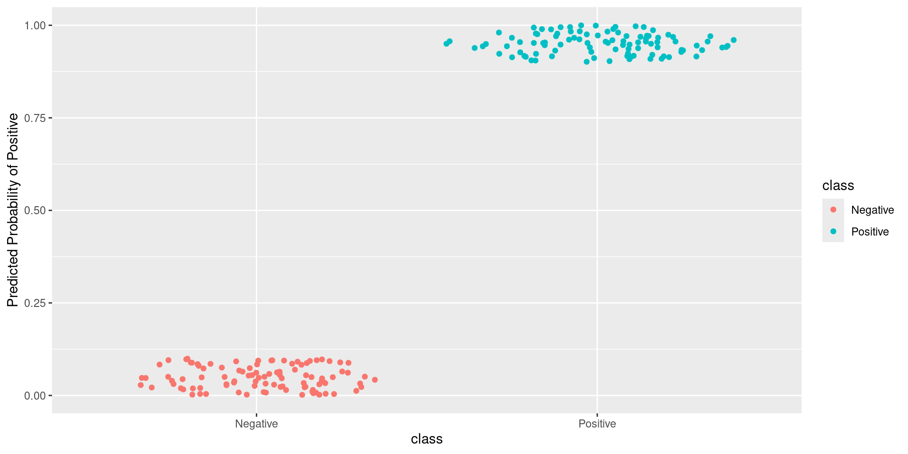
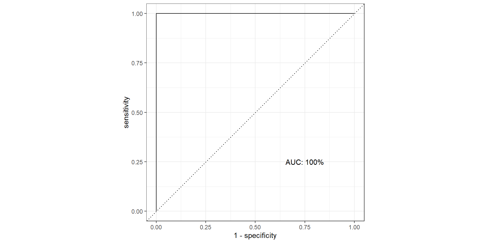
Pathological Example 2
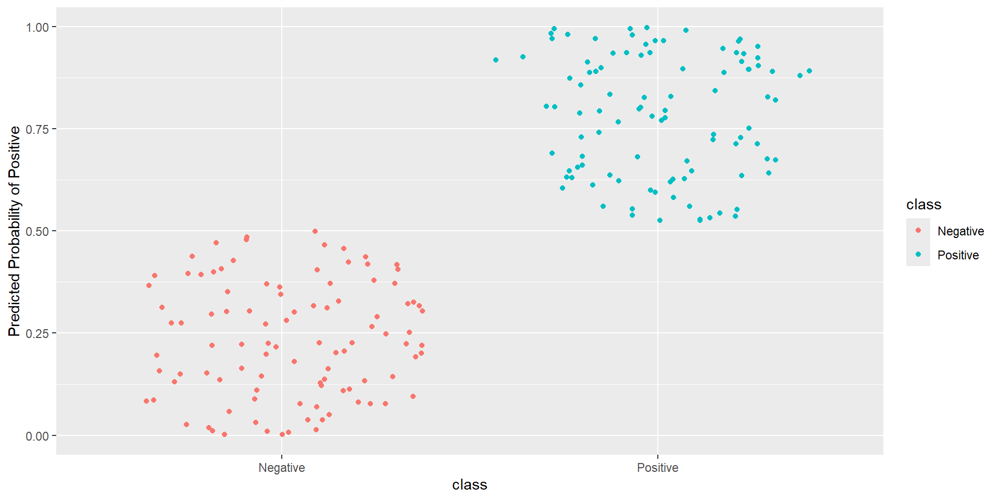

Pathological Example 3
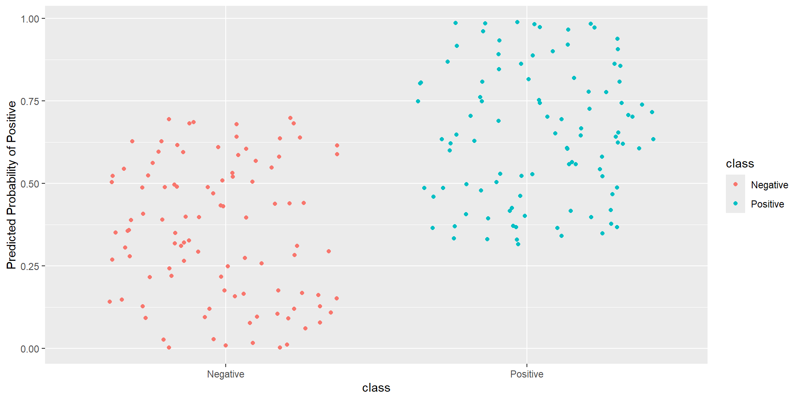
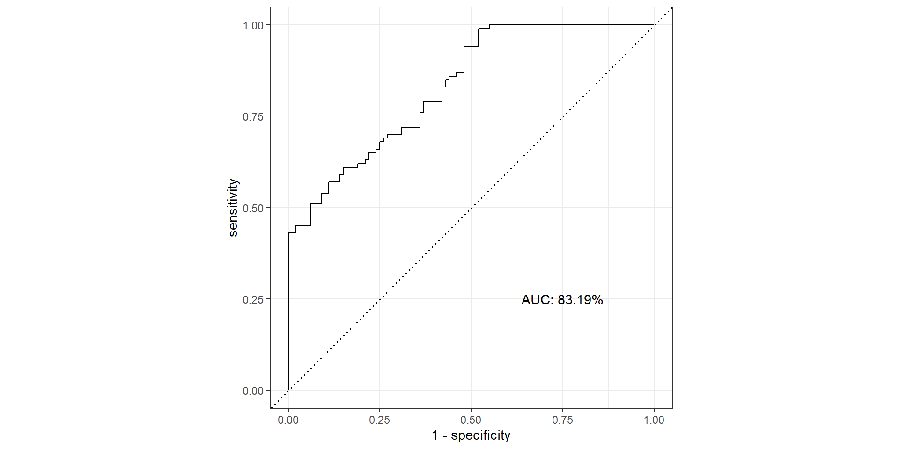
Pathological Example 4
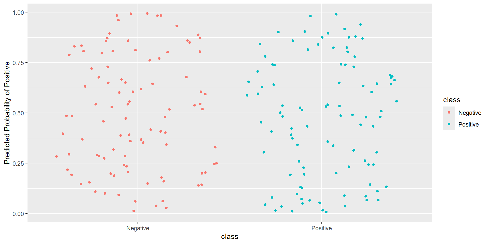
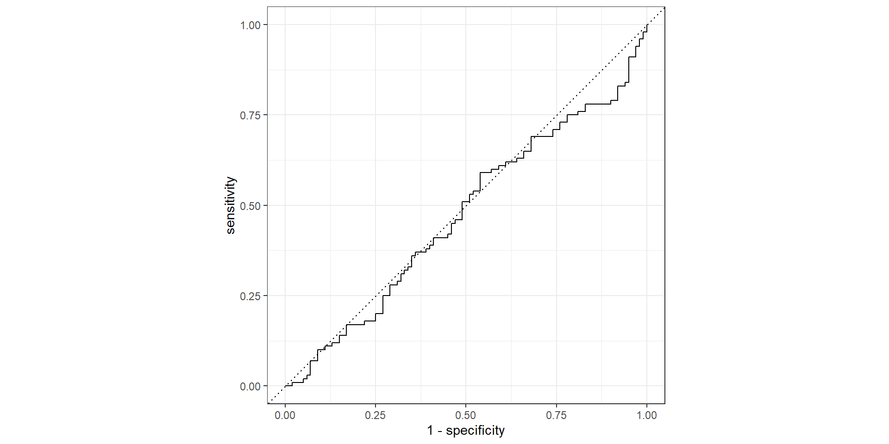
Pathological Example 5
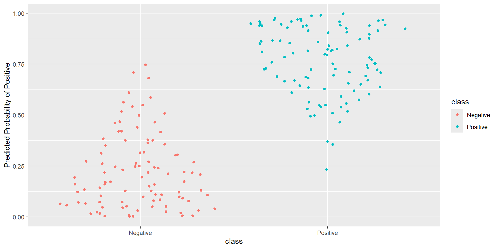
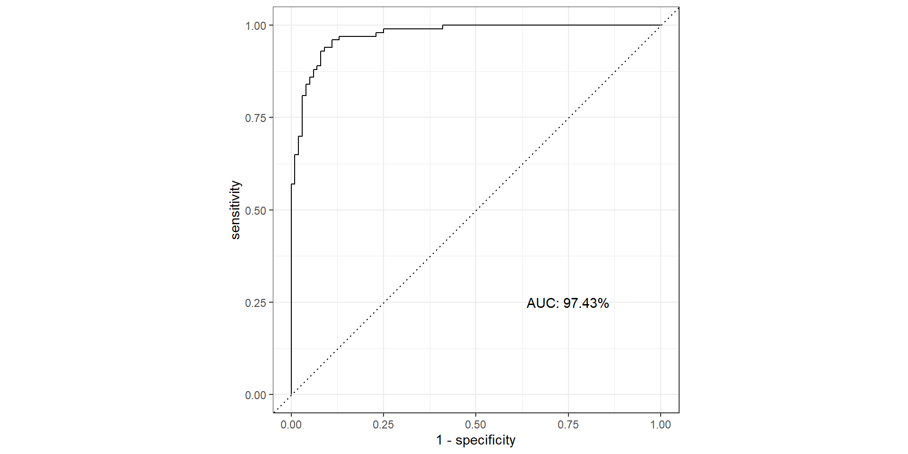
Pathological Example 6
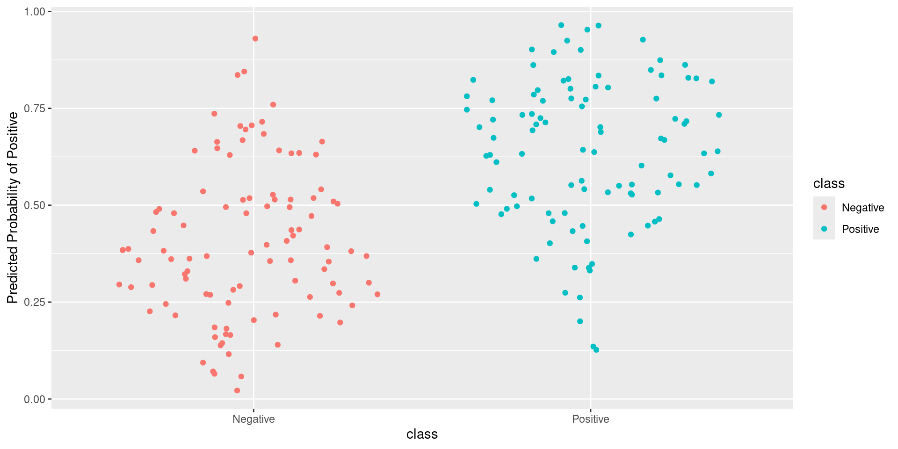
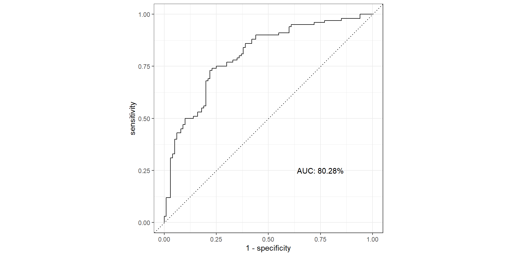
Pathological Example 7
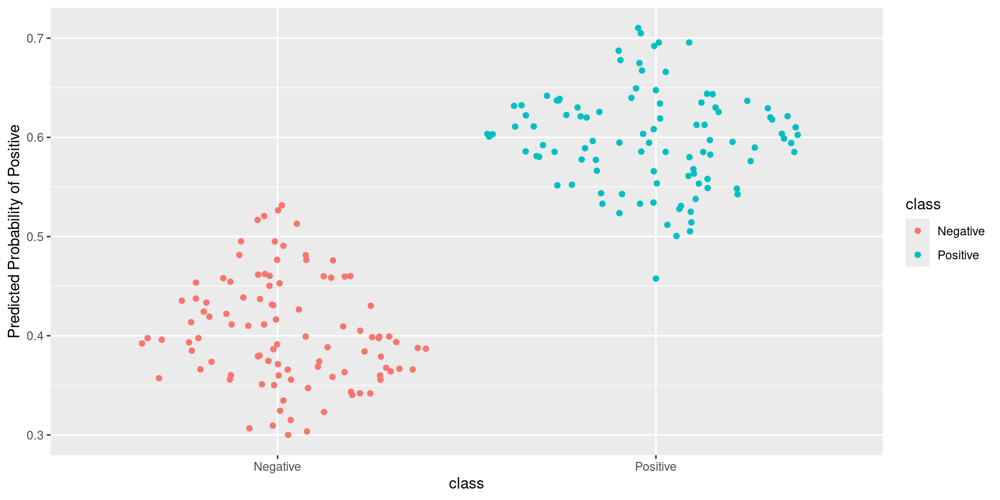
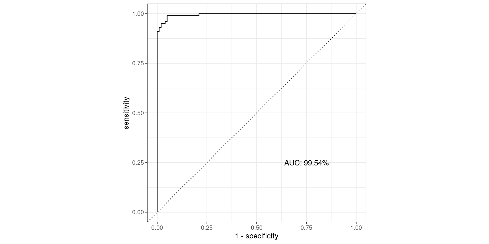
AUC Questions
- What should be the minimum AUC?
- What should be that maximum possible AUC?